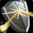
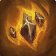
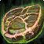
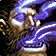
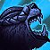
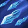

首领 1 · 囤宝狂人
看到 腐坏补给（7 秒连续投掷）
法术反射 反弹
首领扔向你的那一包烂食物会被原样弹回去，一次打首领约 68 万。每轮腐坏补给都开，冷却刚好跟得上。
这个副本的武器战，法术反射是第一个要练熟的键：囤宝狂人每轮腐坏补给都能反弹回首领脸上，纳洛拉克的回响重击靠它压掉两成。物理大招交给剑在人在，每次被首领击飞，落地立刻冲锋回去。
+23 Doxorsw（26:06 限时）一整场里，剑在人在、法术反射、集结呐喊分别交给了哪个机制。

法术反射每把都要做到的四件事。
首领扔向你的那一包烂食物会被原样弹回去，一次打首领约 68 万。每轮腐坏补给都开，冷却刚好跟得上。
回响是自然伤害，一下能打掉九成血。点名 4 秒内开反射，压到八成左右；残血或和队友回响叠在一起时，再补剑在人在。
先按副本给的防御姿态，三下连击伤害降低 80%。最后一下把所有人击飞，落地立刻冲锋回纳洛拉克身边。
读条快结束时开剑在人在，盖住首击和 10 秒流血。被震飞后冲锋回首领，血线低就接 胜利在望 回 30%。
反射弹回第一个对你施放的法术，同时 5 秒内魔法伤害降低 20%。这个副本两种用法都很多。
这些是「扔到你身上」的单体法术。看到读条或投掷动作就开，伤害直接弹回施法者。


回响是落地爆炸，不是对你施放的法术，弹不回去，但反射的 20% 魔法减伤照样生效。反射冷却只有二十多秒，每次点名都转好了。
回响重击一次承伤（含吸收盾），+23 武器战实测。不开的那一下打到剩 6% 血。
同样只吃减伤的还有：寒冰暴雨、冰川之墓的冰霜跳伤、灼热岩浆、冰寒涌动、苦难盛宴。读条时手边有反射就开。
每一行：看到什么 → 按什么 → 为什么。



描金框的是这个副本的核心。
| 减益 | 类型 | 自己能处理吗 | 怎么处理 |
|---|---|---|---|
| 点名 · 8 码自然 | 减伤 | 法术反射；残血加剑在人在，走出队友 8 码 | |
冰冷咆哮 | 减速 · 减急速 | ✓ 狂暴之怒 | 需天赋「无所畏惧」 |
| 地面 · 减速 | ✓ 冲锋 / 狂暴之怒 | 冲出骨片，或狂暴之怒清减速 | |
| 物理 · 10 秒流血 | 减伤 | 剑在人在提前开，跳完接胜利在望 | |
| 流血 · 叠层 | ✗ | 胜利在望自奶；奶骑保护祝福能清 | |
| 冻结 · 冰霜跳伤 | ✗ | 队友打碎墓；反射减跳伤 | |
| 魔法 · 16 秒 | ✗ | 治疗驱散；上身先开反射 | |
饥肠辘辘 | 诅咒 · 减最大生命 | ✗ | 萨满、德鲁伊驱散 |
| 中毒 · 叠层 | ✗ | 治疗驱毒 |
+23 Doxorsw 同款武器天赋，英雄天赋屠戮者。复制字符串，在游戏天赋界面点「导入」。
CcEAAAAAAAAAAAAAAAAAAAAAAgZmZmFzYmZGAAAghphxYmZbZmZmZYGzMAAAAAGLzMwEGLbDsAGwMMBmBbgZGGGMLzsNAzMAYGGA